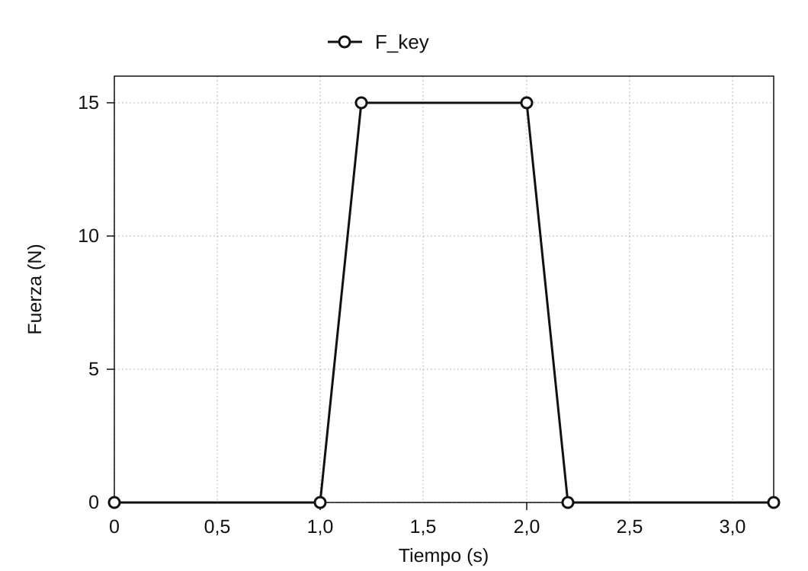
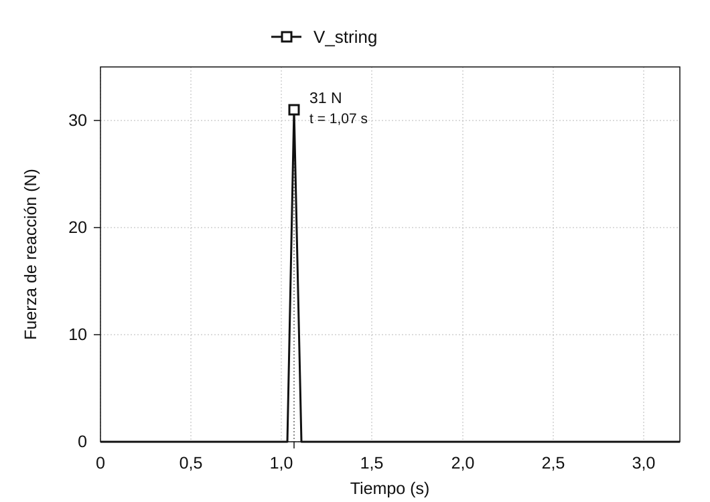

Análisis del movimiento del mecanismo de un piano
enero de 2020
Visión general
El mecanismo de un piano de cola es el sistema de palancas que transmite la pulsación de una tecla a un macillo, que asciende hasta golpear una cuerda y hacerla vibrar. Este proyecto recreó el mecanismo como un modelo 3D en SolidWorks* y utilizó el análisis del movimiento para examinar cómo la acción sobre la tecla se traduce en velocidad del macillo y fuerza de reacción en la cuerda.
El mecanismo se modeló desde cero a partir de imágenes de referencia y se estudió mediante dos análisis: la relación entre la velocidad de descenso de la tecla y la de ascenso del macillo, y la relación entre la fuerza aplicada a la tecla y la fuerza de reacción de la cuerda. Los resultados de la simulación se compararon con valores teóricos calculados a partir de las dimensiones y los puntos de giro del modelo para comprobar cómo transmitía el movimiento y la fuerza.
* SolidWorks es un sistema de CAD 3D con herramientas de análisis estructural de piezas y de análisis del movimiento de mecanismos.


Construcción de un modelo del mecanismo para el análisis
Cómo una pulsación hace que el macillo golpee la cuerda
El mecanismo del piano convierte el movimiento descendente de una tecla en el movimiento ascendente de un macillo. Al pulsar una tecla, el pilotín, la báscula, la palanca de escape y la palanca de repetición se mueven conjuntamente y elevan el macillo hasta que golpea la cuerda. El pianista realiza una sola pulsación, pero dentro del mecanismo varias piezas giran alrededor de distintos ejes y transmiten el movimiento por contacto.
El modelo 3D incluye la tecla, el macillo, la palanca de escape, la báscula, la palanca de repetición, el pilotín, el apagador, la palanca del apagador y el alambre, junto con su bastidor de soporte. Para modelar el movimiento, hubo que definir el punto de giro de cada pieza y sus puntos de contacto con las demás.
Construcción del modelo 3D a partir de un dibujo en sección
Cada pieza se modeló desde cero en 3D trazando su contorno sobre un dibujo en sección del mecanismo del piano. Después se ensamblaron las piezas mediante uniones fijas y articulaciones de giro correspondientes al mecanismo físico. Definir estas relaciones convirtió la geometría en un modelo de análisis capaz de moverse bajo las fuerzas aplicadas.


Verificación de los grados de libertad del ensamblaje
El ensamblaje contiene nueve piezas móviles, sin contar el bastidor fijo, con un total de 54 grados de libertad antes de aplicar restricciones. Fijar el pilotín y el alambre a otras piezas elimina 12 grados de libertad. Las articulaciones de giro de las siete piezas restantes eliminan otros 35, de modo que el ensamblaje CAD queda con 7 grados de libertad:
54 − 12 − 35 = 7
El diagnóstico de restricciones de SolidWorks también indicó 7 grados de libertad estimados y 7 reales, con 0 restricciones redundantes. Esto confirmó que las piezas y las restricciones definidas para este proyecto se habían ensamblado según lo previsto; no determina los grados de libertad de todos los mecanismos de piano físicos.

Dos análisis de la acción sobre la tecla
El modelo se estudió mediante dos análisis independientes. El análisis 1 comparó la velocidad de la tecla con la del macillo. El análisis 2 comparó la fuerza aplicada a la tecla con la fuerza de reacción de la cuerda. Separar estas relaciones entre entrada y salida facilitó el estudio del complejo sistema de palancas mediante relaciones geométricas de velocidades y equilibrio de palancas.
Para establecer una comparación, el mecanismo se simplificó en elementos giratorios y se analizó teóricamente. La concordancia entre los valores teóricos y simulados indicaría que el movimiento del modelo era coherente con las dimensiones y restricciones especificadas.

Análisis 1: de la velocidad de la tecla a la del macillo
Para calcular las velocidades, el mecanismo se simplificó en tres cuerpos rígidos: la tecla, un mecanismo intermedio centrado en la báscula y el macillo. Tratar el movimiento como una secuencia de contactos de ① a ③ permitió analizar el conjunto como tres etapas de rotación.

Todos los puntos de un cuerpo rígido comparten la misma velocidad angular. Si r es la distancia al eje de giro y v la velocidad lineal en ese punto, entonces v = ωr. Suponiendo que la velocidad se transmite entre los cuerpos sin pérdidas en cada punto de contacto, la velocidad del macillo puede calcularse multiplicando los cocientes entre los radios de salida y entrada de las tres etapas y, después, multiplicando ese producto por la velocidad de la tecla.
vhammer = (r1′ r2′ r3′ / r1 r2 r3) vkey

Condiciones de entrada y resultados
En SolidWorks Motion Analysis se aplicó una fuerza descendente de 5 N al extremo de la tecla. Se registraron las velocidades lineales del extremo de la tecla y del macillo. Inmediatamente después de iniciarse la fuerza, sus velocidades máximas fueron de 1027 mm/s y 4284 mm/s, respectivamente, lo que da una relación simulada entre la velocidad del macillo y la de la tecla de aproximadamente 4,17.

| Magnitud y método | Velocidad |
|---|---|
| Tecla (simulación) | 1027 mm/s |
| Macillo (teoría) | 4614 mm/s |
| Macillo (simulación) | 4284 mm/s |
Comparación con la teoría
Los radios medidos fueron r1 = 200 mm, r1′ = 88 mm, r2 = 53 mm, r2′ = 78 mm, r3 = 16 mm y r3′ = 111 mm. Sustituyendo estos valores se obtiene una relación idealizada de velocidades de aproximadamente 4,49. Para una velocidad de la tecla de 1027 mm/s, la velocidad prevista del macillo es de 4614 mm/s.

La velocidad simulada del macillo de 4284 mm/s fue aproximadamente un 7 % inferior al valor teórico, aunque mostró un grado de amplificación de velocidad similar. El cálculo teórico utiliza tres cuerpos rígidos idealizados, mientras que la simulación representa las piezas individuales. La diferencia numérica, por sí sola, no permite determinar su causa.
Análisis 2: de la fuerza sobre la tecla a la fuerza de reacción de la cuerda
En el segundo análisis se aplicó una fuerza descendente de 15 N a la superficie de la tecla y se registró la fuerza de reacción de la cuerda en el impacto. La fuerza sobre la tecla, Fkey, comenzó a aumentar en el segundo 1,0 y alcanzó 15 N. La fuerza de reacción, Vstring, alcanzó un máximo de 31 N cuando el macillo golpeó la cuerda.


Como comparación, se realizó un cálculo simplificado de equilibrio de palancas utilizando las longitudes de los brazos de los lados de la tecla y del macillo.
Vstring = (15 × 195) / 94 = 31.1 N
Con brazos de 195 mm en el lado de entrada y 94 mm en el lado de la cuerda, el cálculo estático de equilibrio de palancas da un valor de comparación de 31,1 N. Es 0,1 N superior al máximo simulado de 31 N. Aún deben confirmarse las condiciones en las que este cálculo estático puede aplicarse al máximo instantáneo de la fuerza de reacción durante el impacto.

Comparación de la simulación con la teoría
Resultados de las dos comparaciones
En el análisis 1, la velocidad teórica del macillo fue de 4614 mm/s, frente a 4284 mm/s en la simulación. En el análisis 2, el valor de comparación estático obtenido por equilibrio de palancas fue de 31,1 N, frente a un máximo simulado de 31 N. Ambas comparaciones mostraron una concordancia estrecha entre el modelo 3D y los cálculos teóricos.
Interpretación de las diferencias
El cálculo teórico reduce el mecanismo a tres cuerpos rígidos y supone que el movimiento y la fuerza se transmiten por sus puntos de contacto sin pérdidas. La simulación, en cambio, representa los componentes individuales. Estas diferencias de representación son importantes para interpretar los resultados, pero atribuir la discrepancia restante a pérdidas de energía o a la deformación de materiales requiere confirmar los ajustes de la simulación.
Conclusión
Los resultados de la simulación 3D concordaron estrechamente con los valores teóricos de la velocidad del macillo y la fuerza de reacción de la cuerda. Dentro del alcance de estas comparaciones, el modelo construido a partir de un dibujo en sección reprodujo la transmisión de movimiento y fuerza esperada según la geometría y las restricciones especificadas.
El proyecto conectó varias etapas del modelado: interpretar un dibujo en sección, traducir las relaciones entre piezas a restricciones CAD y simplificar el ensamblaje en un modelo mecánico adecuado para cada análisis.